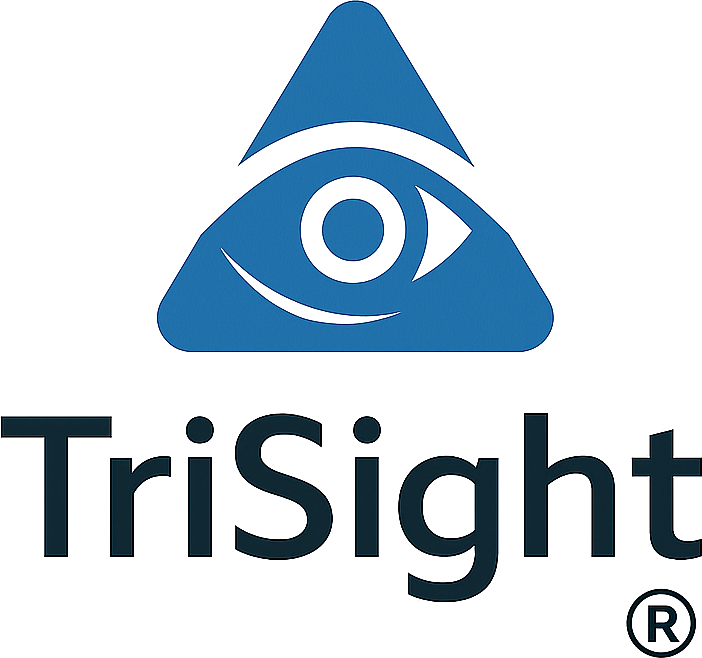

いま公開されている画面そのものから読み取った、見出しごとのボタン・リンク・入力欄の並びです。画面の版が上がると、ここも自動で変わります。
画面をまたぐ作業の流れです。手順に出てくる名前は、開くたびに今の画面と照合しています（✓は今の画面にある名前、✕は見当たらない名前です）。
やりたいことを書いてください。今の画面から読み取った内容だけを使って、どの画面の、どの見出しの下の、どのボタンかを順に答えます。
答えに出てくるボタンなどの名前は、出す前に今の画面と照合します。画面に無い名前が一つでも入っていた答えは出しません。
知っていると手間が減る使い方です。ここに出てくる名前も、今の画面と照合しています。